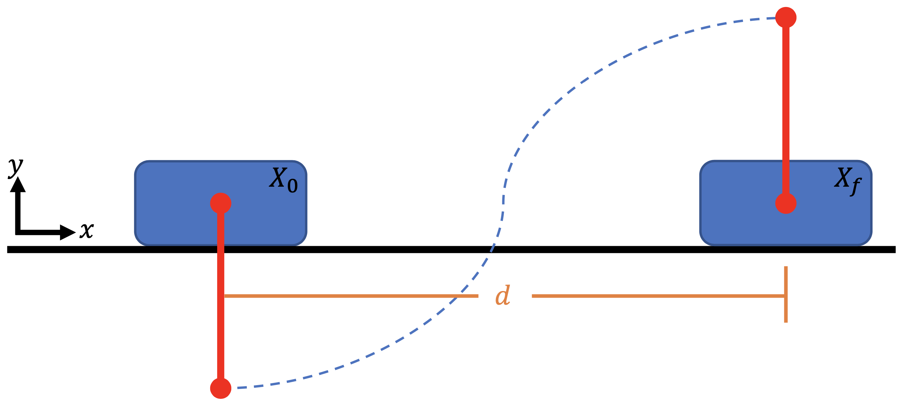
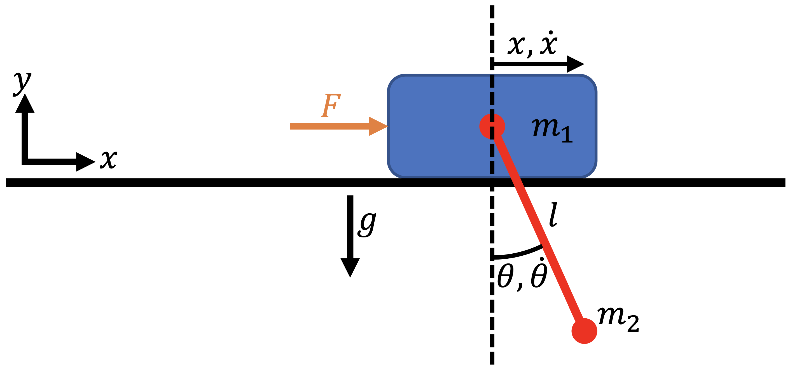

Cart-Pole Optimal Control#
This example is authored by Shugo Kaneko and Bernardo Pacini of the MDO Lab. The cart-pole problem is an instructional case described in An introduction to trajectory optimization: How to do your own direct collocation [Kel17], and is adapted to work within Dymos. We consider a pole that can rotate freely attached to a cart, on which we can exert an external force (control input) in the \(x\)-direction.
Our goal is to bring the cart-pole system from an initial state to a terminal state with minimum control efforts. The initial state is the stable stationary point (the cart at a stop with the pole vertically down), and the terminal state is the unstable stationary state (the cart at a stop but with the pole vertically up). Friction force is ignored to simplify the problem.

Trajectory Optimization Problem#
We use the following quadratic objective function to approximately minimize the total control effort:
where \(F(t)\) is the external force, \(t_0\) is the initial time, and \(t_f\) is the final time.
Dynamics#
The equations of motion of the cart-pole system are given by
where \(x\) is the cart location, \(\theta\) is the pole angle, \(m_1\) is the cart mass, \(m_2\) is the pole mass, and \(\ell\) is the pole length.

Now, we need to convert the equations of motion, which are a second-order ODE, to a first-order ODE. To do so, we define our state vector to be \(X = [x, \dot{x}, \theta, \dot{\theta}]^T\). We also add an “energy” state \(e\) and set \(\dot{e} = F^2\) to keep track of the accumulated control input. By setting setting \(e_0 = 0\), the objective function is equal to the final value of the state \(e\):
To summarize, the ODE for the cart-pole system is given by
Initial and terminal conditions#
The initial state variables are all zero at \(t_0 = 0\), and the final conditions at time \(t_f\) are
Parameters#
The fixed parameters are summarized as follows.
Parameter |
Value |
Units |
Description |
|---|---|---|---|
\(m_1\) |
1.0 |
kg |
Cart mass |
\(m_2\) |
0.3 |
kg |
Pole mass |
\(\ell\) |
0.5 |
m |
Pole length |
\(d\) |
2 |
m |
Cart target location |
\(t_f\) |
2 |
s |
Final time |
Implementing the ODE#
We first implement the cart-pole ODE as an ExplicitComponent as follows:
import openmdao.api as om
om.display_source("dymos.examples.cart_pole.cartpole_dynamics")
"""
Cart-pole dynamics (ODE)
"""
import numpy as np
import openmdao.api as om
class CartPoleDynamics(om.ExplicitComponent):
"""
Computes the time derivatives of states given state variables and control inputs.
Parameters
----------
m_cart : float
Mass of cart.
m_pole : float
Mass of pole.
l_pole : float
Length of pole.
theta : 1d array
Angle of pole, 0 for vertical downward, positive counter clockwise.
theta_dot : 1d array
Angluar velocity of pole.
f : 1d array
x-wise force applied to the cart.
Returns
-------
x_dotdot : 1d array
Acceleration of cart in x direction.
theta_dotdot : 1d array
Angular acceleration of pole.
e_dot : 1d array
Rate of "energy" state.
"""
def initialize(self):
self.options.declare(
"num_nodes", default=1, desc="number of nodes to be evaluated (i.e., length of vectors x, theta, etc)"
)
self.options.declare("g", default=9.81, desc="gravity constant")
def setup(self):
nn = self.options["num_nodes"]
# --- inputs ---
# cart-pole parameters
self.add_input("m_cart", shape=(1,), units="kg", desc="cart mass")
self.add_input("m_pole", shape=(1,), units="kg", desc="pole mass")
self.add_input("l_pole", shape=(1,), units="m", desc="pole length")
# state variables. States x, x_dot, energy have no influence on the outputs, so we don't need them as inputs.
self.add_input("theta", shape=(nn,), units="rad", desc="pole angle")
self.add_input("theta_dot", shape=(nn,), units="rad/s", desc="pole angle velocity")
# control input
self.add_input("f", shape=(nn,), units="N", desc="force applied to cart in x direction")
# --- outputs ---
# rate of states (accelerations)
self.add_output("x_dotdot", shape=(nn,), units="m/s**2", desc="x acceleration of cart")
self.add_output("theta_dotdot", shape=(nn,), units="rad/s**2", desc="angular acceleration of pole")
# also computes force**2, which will be integrated to compute the objective
self.add_output("e_dot", shape=(nn,), units="N**2", desc="square of force to be integrated")
# --- partials ---.
# Jacobian of outputs w.r.t. state/control inputs is diagonal
# because each node (corresponds to time discretization) is independent
self.declare_partials(of=["*"], wrt=["theta", "theta_dot", "f"], method="exact", rows=np.arange(nn), cols=np.arange(nn))
# partials of outputs w.r.t. cart-pole parameters. We will use complex-step, but still declare the sparsity structure.
# NOTE: since the cart-pole parameters are fixed during optimization, these partials are not necessary to declare.
self.declare_partials(of=["*"], wrt=["m_cart", "m_pole", "l_pole"], method="cs", rows=np.arange(nn), cols=np.zeros(nn))
self.set_check_partial_options(wrt=["m_cart", "m_pole", "l_pole"], method="fd", step=1e-7)
def compute(self, inputs, outputs):
g = self.options["g"]
mc = inputs["m_cart"]
mp = inputs["m_pole"]
lpole = inputs["l_pole"]
theta = inputs["theta"]
omega = inputs["theta_dot"]
f = inputs["f"]
sint = np.sin(theta)
cost = np.cos(theta)
det = mp * lpole * cost**2 - lpole * (mc + mp)
outputs["x_dotdot"] = (-mp * lpole * g * sint * cost - lpole * (f + mp * lpole * omega**2 * sint)) / det
outputs["theta_dotdot"] = ((mc + mp) * g * sint + cost * (f + mp * lpole * omega**2 * sint)) / det
outputs["e_dot"] = f**2
def compute_partials(self, inputs, jacobian):
g = self.options["g"]
mc = inputs["m_cart"]
mp = inputs["m_pole"]
lpole = inputs["l_pole"]
theta = inputs["theta"]
theta_dot = inputs["theta_dot"]
f = inputs["f"]
# --- derivatives of x_dotdot ---
# Collecting Theta Derivative
low = mp * lpole * np.cos(theta) ** 2 - lpole * mc - lpole * mp
dhigh = (
mp * g * lpole * np.sin(theta) ** 2 -
mp * g * lpole * np.cos(theta) ** 2 -
lpole**2 * mp * theta_dot**2 * np.cos(theta)
)
high = -mp * g * lpole * np.cos(theta) * np.sin(theta) - lpole * f - lpole**2 * mp * theta_dot**2 * np.sin(theta)
dlow = 2.0 * mp * lpole * np.cos(theta) * (-np.sin(theta))
jacobian["x_dotdot", "theta"] = (low * dhigh - high * dlow) / low**2
jacobian["x_dotdot", "theta_dot"] = (
-2.0 * theta_dot * lpole**2 * mp * np.sin(theta) / (mp * lpole * np.cos(theta) ** 2 - lpole * mc - lpole * mp)
)
jacobian["x_dotdot", "f"] = -lpole / (mp * lpole * np.cos(theta) ** 2 - lpole * mc - lpole * mp)
# --- derivatives of theta_dotdot ---
# Collecting Theta Derivative
low = mp * lpole * np.cos(theta) ** 2 - lpole * mc - lpole * mp
dlow = 2.0 * mp * lpole * np.cos(theta) * (-np.sin(theta))
high = (mc + mp) * g * np.sin(theta) + f * np.cos(theta) + mp * lpole * theta_dot**2 * np.sin(theta) * np.cos(theta)
dhigh = (
(mc + mp) * g * np.cos(theta) -
f * np.sin(theta) +
mp * lpole * theta_dot**2 * (np.cos(theta) ** 2 - np.sin(theta) ** 2)
)
jacobian["theta_dotdot", "theta"] = (low * dhigh - high * dlow) / low**2
jacobian["theta_dotdot", "theta_dot"] = (
2.0 *
theta_dot *
mp *
lpole *
np.sin(theta) *
np.cos(theta) /
(mp * lpole * np.cos(theta) ** 2 - lpole * mc - lpole * mp)
)
jacobian["theta_dotdot", "f"] = np.cos(theta) / (mp * lpole * np.cos(theta) ** 2 - lpole * mc - lpole * mp)
# --- derivatives of e_dot ---
jacobian["e_dot", "theta"] = 0.0
jacobian["e_dot", "theta_dot"] = 0.0
jacobian["e_dot", "f"] = 2.0 * f
Building and running the problem#
The following is a runscript of the cart-pole optimal control problem. First, we instantiate the OpenMDAO problem and set up the Dymos trajectory, phase, and transcription.
"""
Cart-pole optimizatio runscript
"""
import numpy as np
import openmdao.api as om
import dymos as dm
from dymos.examples.plotting import plot_results
from dymos.examples.cart_pole.cartpole_dynamics import CartPoleDynamics
p = om.Problem()
# --- instantiate trajectory and phase, setup transcription ---
traj = dm.Trajectory()
p.model.add_subsystem('traj', traj)
phase = dm.Phase(transcription=dm.GaussLobatto(num_segments=40, order=3, compressed=True, solve_segments=False), ode_class=CartPoleDynamics)
# NOTE: set solve_segments=True to do solver-based shooting
traj.add_phase('phase', phase)
<dymos.phase.phase.Phase at 0x7f2df083f770>
Next, we add the state variables, controls, and cart-pole parameters.
# --- set state and control variables ---
phase.set_time_options(fix_initial=True, fix_duration=True, duration_val=2., units='s')
# declare state variables. You can also set lower/upper bounds and scalings here.
phase.add_state('x', fix_initial=True, lower=-2, upper=2, rate_source='x_dot', shape=(1,), ref=1, defect_ref=1, units='m')
phase.add_state('x_dot', fix_initial=True, rate_source='x_dotdot', shape=(1,), ref=1, defect_ref=1, units='m/s')
phase.add_state('theta', fix_initial=True, rate_source='theta_dot', shape=(1,), ref=1, defect_ref=1, units='rad')
phase.add_state('theta_dot', fix_initial=True, rate_source='theta_dotdot', shape=(1,), ref=1, defect_ref=1, units='rad/s')
phase.add_state('energy', fix_initial=True, rate_source='e_dot', shape=(1,), ref=1, defect_ref=1, units='N**2*s') # integration of force**2. This does not have the energy unit, but I call it "energy" anyway.
# declare control inputs
phase.add_control('f', fix_initial=False, rate_continuity=False, lower=-20, upper=20, shape=(1,), ref=0.01, units='N')
# add cart-pole parameters (set static_target=True because these params are not time-depencent)
phase.add_parameter('m_cart', val=1., units='kg', static_target=True)
phase.add_parameter('m_pole', val=0.3, units='kg', static_target=True)
phase.add_parameter('l_pole', val=0.5, units='m', static_target=True)
We set the terminal conditions as boundary constraints and declare the optimization objective.
# --- set terminal constraint ---
# alternatively, you can impose those by setting `fix_final=True` in phase.add_state()
phase.add_boundary_constraint('x', loc='final', equals=1, ref=1., units='m') # final horizontal displacement
phase.add_boundary_constraint('theta', loc='final', equals=np.pi, ref=1., units='rad') # final pole angle
phase.add_boundary_constraint('x_dot', loc='final', equals=0, ref=1., units='m/s') # 0 velocity at the and
phase.add_boundary_constraint('theta_dot', loc='final', equals=0, ref=0.1, units='rad/s') # 0 angular velocity at the end
phase.add_boundary_constraint('f', loc='final', equals=0, ref=1., units='N') # 0 force at the end
# --- set objective function ---
# we minimize the integral of force**2.
phase.add_objective('energy', loc='final', ref=100)
Next, we configure the optimizer and declare the total Jacobian coloring to accelerate the derivative computations.
We then call the setup method to setup the OpenMDAO problem.
# --- configure optimizer ---
p.driver = om.pyOptSparseDriver()
p.driver.options["optimizer"] = "IPOPT"
# IPOPT options
p.driver.opt_settings['mu_init'] = 1e-1
p.driver.opt_settings['max_iter'] = 600
p.driver.opt_settings['constr_viol_tol'] = 1e-6
p.driver.opt_settings['compl_inf_tol'] = 1e-6
p.driver.opt_settings['tol'] = 1e-5
p.driver.opt_settings['print_level'] = 0
p.driver.opt_settings['nlp_scaling_method'] = 'gradient-based'
p.driver.opt_settings['alpha_for_y'] = 'safer-min-dual-infeas'
p.driver.opt_settings['mu_strategy'] = 'monotone'
p.driver.opt_settings['bound_mult_init_method'] = 'mu-based'
p.driver.options['print_results'] = False
# declare total derivative coloring to accelerate the UDE linear solves
p.driver.declare_coloring()
p.setup(check=False)
<openmdao.core.problem.Problem at 0x7f2df083c440>
Now we are ready to run optimization. But before that, set the initial optimization variables using set_val methods to help convergence.
# --- set initial guess ---
# The initial condition of cart-pole (i.e., state values at time 0) is set here because we set `fix_initial=True` when declaring the states.
phase.set_time_val(initial=0.0) # set initial time to 0.
phase.set_state_val('x', vals=[0, 1, 1], time_vals=[0, 1, 2], units='m')
phase.set_state_val('x_dot', vals=[0, 0.1, 0], time_vals=[0, 1, 2], units='m/s')
phase.set_state_val('theta', vals=[0, np.pi/2, np.pi], time_vals=[0, 1, 2], units='rad')
phase.set_state_val('theta_dot', vals=[0, 1, 0], time_vals=[0, 1, 2], units='rad/s')
phase.set_state_val('energy', vals=[0, 30, 60], time_vals=[0, 1, 2])
phase.set_control_val('f', vals=[3, -1, 0], time_vals=[0, 1, 2], units='N')
# --- run optimization ---
dm.run_problem(p, run_driver=True, simulate=True, simulate_kwargs={'method': 'Radau', 'times_per_seg': 10})
# NOTE: with Simulate=True, dymos will call scipy.integrate.solve_ivp and simulate the trajectory using the optimized control inputs.
Jacobian shape: (206, 281) (2.82% nonzero)
FWD solves: 10 REV solves: 0
Total colors vs. total size: 10 vs 281 (96.44% improvement)
Sparsity computed using tolerance: 1e-25.
Dense total jacobian for Problem 'problem' was computed 3 times.
Time to compute sparsity: 0.3448 sec
Time to compute coloring: 0.1829 sec
Memory to compute coloring: 0.3750 MB
Coloring created on: 2025-12-22 16:10:10
Simulating trajectory traj
Done simulating trajectory traj
Problem: problem
Driver: pyOptSparseDriver
success : True
iterations : 39
runtime : 2.6739E+00 s
model_evals : 39
model_time : 4.1713E-02 s
deriv_evals : 38
deriv_time : 4.1862E-01 s
exit_status : SUCCESS
After running optimization and simulation, the results can be plotted using the plot_results function of Dymos.
# --- get results and plot ---
# objective value
obj = p.get_val('traj.phase.states:energy', units='N**2*s')[-1]
print('objective value:', obj)
# get optimization solution and simulation (time integration) results
sol = om.CaseReader(p.get_outputs_dir() / 'dymos_solution.db').get_case('final')
sim = om.CaseReader(traj.sim_prob.get_outputs_dir() / 'dymos_simulation.db').get_case('final')
# plot time histories of x, x_dot, theta, theta_dot
plot_results([('traj.phase.timeseries.time', 'traj.phase.timeseries.x', 'time (s)', 'x (m)'),
('traj.phase.timeseries.time', 'traj.phase.timeseries.x_dot', 'time (s)', 'vx (m/s)'),
('traj.phase.timeseries.time', 'traj.phase.timeseries.theta', 'time (s)', 'theta (rad)'),
('traj.phase.timeseries.time', 'traj.phase.timeseries.theta_dot', 'time (s)', 'theta_dot (rad/s)'),
('traj.phase.timeseries.time', 'traj.phase.timeseries.f', 'time (s)', 'control (N)')],
title='Cart-Pole Problem', p_sol=sol, p_sim=sim)
# uncomment the following lines to show the cart-pole animation
# x = sol.get_val('traj.phase.timeseries.x', units='m')
# theta = sol.get_val('traj.phase.timeseries.theta', units='rad')
# force = sol.get_val('traj.phase.timeseries.f', units='N')
# npts = len(x)
# from dymos.examples.cart_pole.animate_cartpole import animate_cartpole
# animate_cartpole(x.reshape(npts), theta.reshape(npts), force.reshape(npts), interval=20, force_scaler=0.02)
objective value: [58.83925104]
(<Figure size 1000x800 with 5 Axes>,
array([<Axes: xlabel='time (s)', ylabel='x (m)'>,
<Axes: xlabel='time (s)', ylabel='vx (m/s)'>,
<Axes: xlabel='time (s)', ylabel='theta (rad)'>,
<Axes: xlabel='time (s)', ylabel='theta_dot (rad/s)'>,
<Axes: xlabel='time (s)', ylabel='control (N)'>], dtype=object))
The optimized cart-pole motion should look like the following:

References#
Matthew Kelly. An introduction to trajectory optimization: How to do your own direct collocation. SIAM Review, 59(4):849–904, 2017. doi:10.1137/16M1062569.